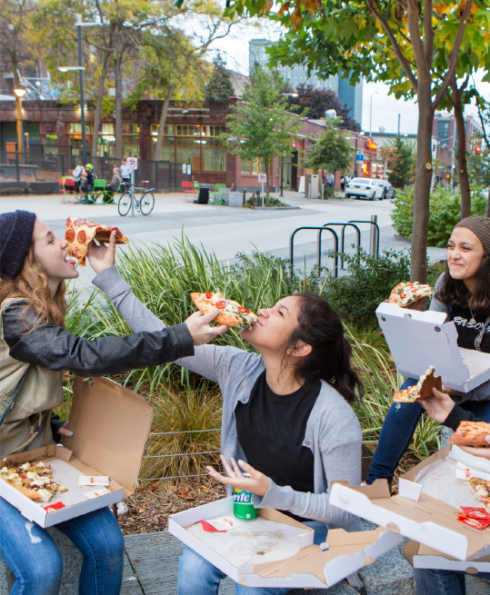
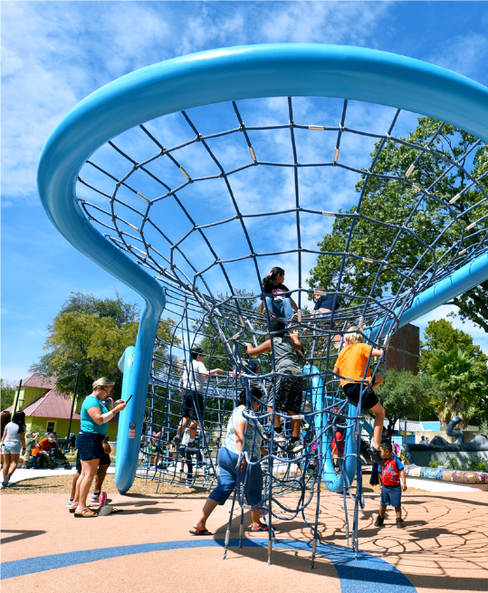
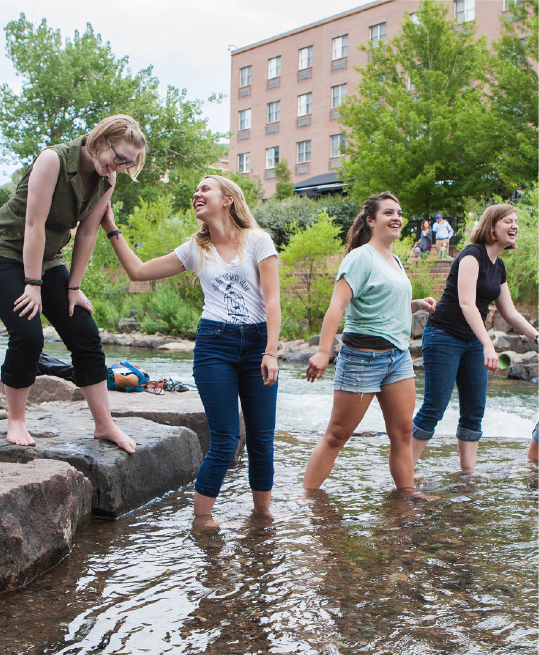
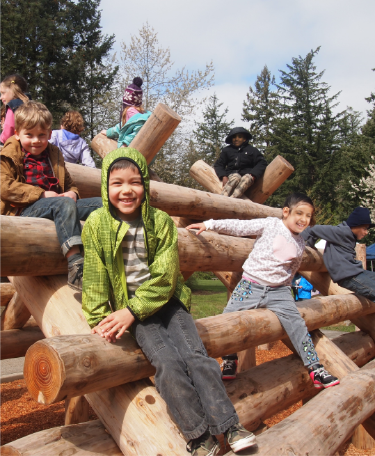

<!DOCTYPE html>
<html lang="en">
  <head>
    <meta charset="UTF-8">
    <meta http-equiv="X-UA-Compatible" content="IE=edge">
    <meta name="viewport" content="width=device-width, initial-scale=1">
    <link rel="stylesheet" href="https://maxcdn.bootstrapcdn.com/bootstrap/3.3.5/css/bootstrap.min.css">
    <link rel="stylesheet" href="css/style.css">
    <title>MIG eNewsletter</title>
  </head>

  <body>
    <div class="container-fluid newsletter">
      <div class="row" id="header">
        News from   <em>Winter 2016</em>
      </div>
      <div id="main-story">
      </div>
      <hr>
      <div class="row">
        <div class="other-story col-lg-4 col-lg-offset-1 col-md-3 col-sm-10 col-sm-offset-1 col-xs-10 col-xs-offset-1">
          
          <h3>BELL STREET PARK REDEFINES PARK SPACE</h3>
          <p>It’s a street. It’s a mall. It’s a sidewalk. It’s a...park! Seattle-based SvR Design Company, which joined MIG in September 2015, transformed a 4-block section of Bell Street into a vibrant, safe and green public space. </p>
          <a href="/bell-street-park-redefines-park-space/" alt="Read Full Article: Bell Street Park Redefines Park Space"></a>
        </div>
        <div class="other-story col-lg-4 col-lg-offset-1 col-md-3 col-sm-10 col-sm-offset-1 col-xs-10 col-xs-offset-1">
          
          <h3>YANAGUANA GARDENS IS OPEN FOR PLAY!</h3>
          <p>Can you imagine playing in a park with no jungle gym? Come to the just-opened Yanaguana Gardens, a dynamic 4-acre park in downtown San Antonio, named for a Payaya Indian village. </p>
          <a href="/yanaguana-gardens-is-open-for-play/" alt="Read Full Article: Yanaguana Gardens is Open for Play"></a>
        </div>
      </div>
      <div class="row">
        <div class="other-story col-lg-4 col-lg-offset-1 col-md-3 col-sm-10 col-sm-offset-1 col-xs-10 col-xs-offset-1">
          
          <h3>WHERE THE FISH COME ASHORE: A PLAZA ON THE CREEK</h3>
          <p>To enhance the Washington Street Bridge flood capacity in Golden, Colorado, the city took the opportunity to build a new bridge, create a creekside play area, add recreational trails and incorporate local art.</p>
          <a href="/where-the-fish-come-ashore/" alt="Read Full Article: Where the Fish Come Ashore"></a>
        </div>
        <div class="other-story other-story col-lg-4 col-lg-offset-1 col-md-3 col-sm-10 col-sm-offset-1 col-xs-10 col-xs-offset-1">
          
          <h3>THEY HAVE ALREADY COME; BUILD IT!<br />NAKADA PARK NOW OFFERS THE FOREST</h3>
          <p>Gresham, Oregon, density over 4,500 people per square mile. The State’s largest city, Portland, density 2,000 people per square mile. Gresham was clearly a city in need of open space. </p>
          <a href="/they-have-already-come/" alt="Read Full Article: They Have Already Come" class="read-full-button"></a>
        </div>
      </div>
    </div>
  </body>
</html>
